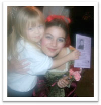

Join us in Making History
Together with Green Oak Township Historical Society
There is only one way for a theatre company to expand and thrive to its best ability and that is to have a viable venue for its productions. In addition, the township hall will be used to its best advantage when local residents can continue to enjoy the aesthetics and sense of history on a continuing basis.
For this reason, the Phoenix Players and The Green Oak Historical Society feel that a joint venture to bring live theatre performances to the 1856 Green Oak Township Hall will be the best for our needs.
The historic township hall is the most feasible local venue for our productions, workshops, camps, and rehearsals. The schools have a few stages available, but the cost is prohibitive, and the spaces are not available for any extended period of time. Performing arts centers in the local area charge far more than any non-profit can afford and buying our own space without an extensive treasury is impossible.
While the space is small, allowing for an audience of about 40 people and a 16x20 foot stage, we have the innovative ability to work around these obstacles. Sets will be minimal, with the focus being on the acting, and with the ability to do more performances of each play, we can still accommodate all of the people who enjoy our productions. As the Historical Society is a non-profit, we have agreed to equitably share the profits of the Phoenix Players events, which will allow The Society to use their portion to do further renovations on this important local historic site.
Once we are done with our preliminary work on the building, we will be able not only to have our own space, but The Historical Society will be able to offer it to other local non-profit groups, such as musical groups, for their performances. This will fill a great need for such venues in the area and allow for even more cultural events to be provided to the community. Additionally, the increased revenue will help to fund our and the Historic Society’s plans for the future.
We hope you share our vision for the future of the cultural experiences in western Oakland and eastern Livingston counties. We think that we have a great deal to offer and that our goals are reasonable and very reachable. The experiences we offer, especially to children, give them life-long memories and skills.
Our plans allow for a double donation—helping the arts community and the cause of historic preservation at the same time. Few organizations can make that claim. Donations to our group are tax deductible and will give your organization or business a visible expression of your support of the local community.
How can you help?
Tax deductible donations of all kinds are needed to help with the theatre project. There are a number of giving levels that will enable you to memorialize your gift with engraved paving stones at the hall and Stars on the Players Wall of Fame, VIP seating for productions, advertising in programs, signs, posters, and ads and links to the Phoenix Players website.